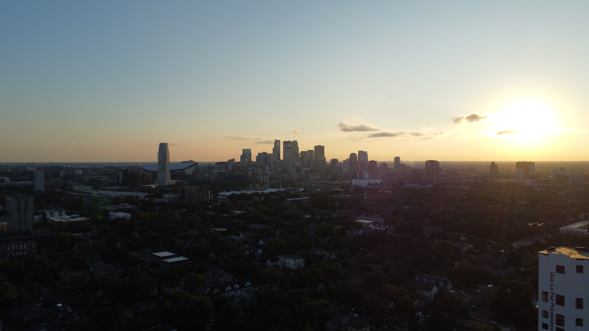

Drone Photography Gallery
I recently started experimenting with drone photography and videography, capturing unique perspectives from above. This gallery showcases some of the early work I've done, exploring the beauty and versatility of aerial imagery.


